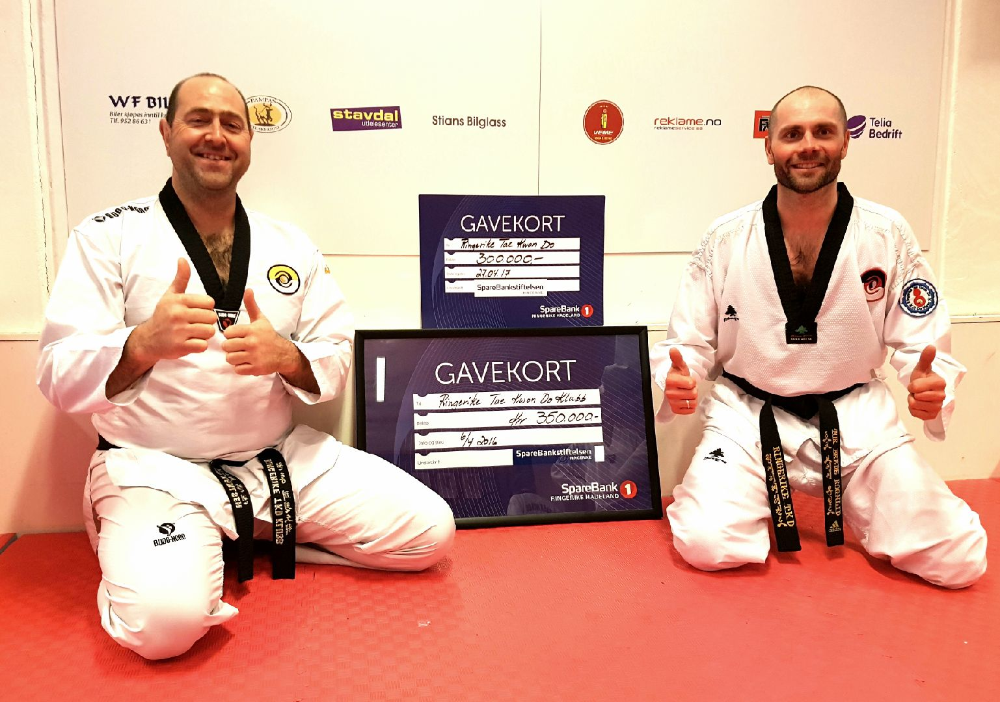
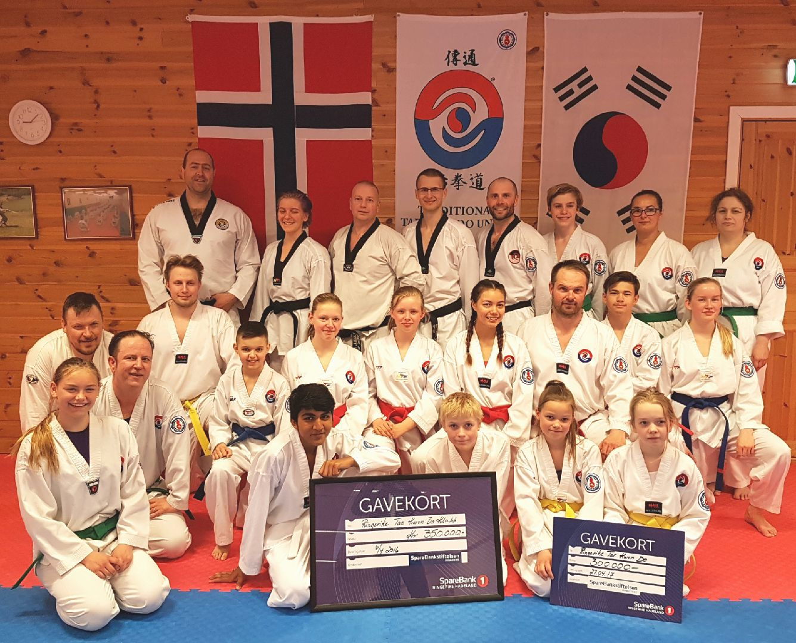

Innlegg
Sparebank 1 stiftelsen slår på stortromma: Har bidratt med 650 000 kroner til ny treningshall for Ringerike TKD Klubb

Overraskelsen var stor da instruktør Tor-Brede Rognlid under torsdagstreningen 27. april kom med en sjekk på 300 000 kroner fra Sparebank 1 stiftelsen til det nye treningssenteret i Hønefoss. – Vi hadde ikke forventet så mye penger og er dypt takknemlig for givergleden, sier Master Geir Karlsen i Ringerike Taekwondo Klubb.
I fjor tildelte Sparebank 1 stiftelsen 350 000 til samme formål. – Meg bekjent er det første gang de har støttet en kampsportklubb med 650 000 kroner. Det økonomiske bidraget er overveldende og avgjørende for å realisere vårt nye treningssenter, som forhåpentligvis vil stå ferdig i løpet av 2018. Flere lokale bedrifter har også støttet prosjektet og vi er dypt takknemlig sier Geir. Han ønsker også å berømme dugnadsånden til flere av klubbens medlemmer. – Uten deres stå-på-vilje hadde vi ikke vært der vi er i dag.
Hjertet av Hønefoss sentrum Den nye treningshallen ligger midt i hjertet av Hønefoss sentrum. Lokalet har tidligere vært i bruk av feievesenet og lagerlokaler for kommunen. Lokalene tilhører kommunen og fremsto i meget dårlig forfatning. Vi har nå inngått en rimelig leieavtale med Ringerike kommune på 30 år med opsjon på videre leie. Forutsetningen for den lave leien var at vi sto for alle oppussingsutgifter, sier Geir. Han kan fortelle at de totale oppussingskostnadene beløper seg til ca. 1,5 millioner kroner. – Alt rivningsarbeid er nå ferdig og vi har fylt mer enn ni 30 kubikks containere med tak-, vegg- og gulvavfall. Nå isolerer vi veggene med Leca isoblokker. Deretter skal vi lekte og isolere taket, pusse muren og male veggene. Det vil også bli montert et nytt elektrisk anlegg fra bunnen av. Ny hovedledning for strøm, ny inngangsdør og nye vinduer er allerede installert samt at ventilasjonsanlegg og ny rømningsvei er påbegynt. Arbeidet bærer frukter Hele lokalet er på 300 kvadratmeter med ca. 190 kvm treningshall. Det omfatter også eget areal for sosiale aktiviteter samt jente- og guttegarderober med sanitære fasiliteter. – Vi har lenge arbeidet for å få egne lokaler som vi kan disponeres syv dager i uken, sier Geir. Han kan fortelle at det var stor usikkerhet med hvor lenge klubben fikk være i Ringerikshallen. – I flere år har usikkerheten om når Ringerikshallen blir nedlagt vært en stor bekymring. Denne usikkerheten kunne vi ikke leve med. Derfor jobber vi hardt mot å flytte inn i ny treningshall i løpet av neste år. Vi håper også å kunne bygge et enda bedre klubbmiljø for klubbens 150 medlemmer når de nye lokalene står ferdige. Vi håper å bli et positivt tilskudd midt i bybildet og også å kunne knytte til oss andre frivillige foreninger som vil kunne få nytte av vårt lokale. Klubben har for tiden et bra samarbeid med Hønefoss Brasiliansk jiu-jitsu og tilbyr trening til våre medlemmer fem til syv dager i uka. Artikkel av:
Trond Schieldrop
Artikkel av:
Trond Schieldrop